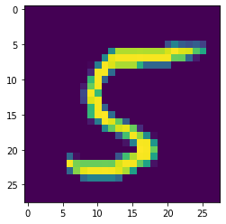

https://www.kaggle.com/c/digit-recognizer
data
import pandas as pd
train_path = './train.csv'
train_data = pd.read_csv(train_path)
#check
#train_data.describe()separate the data into train, cross validation, and test set
train: 60%, cv: 20%, test: 20%
y = train_data.iloc[0:25200,0]
cv_y = train_data.iloc[25200:33600,0]
test_y = train_data.iloc[33600:42000,0]
y.describe()count 25200.000000
mean 4.447063
std 2.881273
min 0.000000
25% 2.000000
50% 4.000000
75% 7.000000
max 9.000000
Name: label, dtype: float64
X = train_data.iloc[0:25200,1:785]
cv_x = train_data.iloc[25200:33600,1:785]
test_x = train_data.iloc[33600:42000,1:785]
X.info()<class 'pandas.core.frame.DataFrame'>
RangeIndex: 25200 entries, 0 to 25199
Columns: 784 entries, pixel0 to pixel783
dtypes: int64(784)
memory usage: 150.7 MB
try sklearn
MLPClassifier(hidden_layer_sizes=(100, ), activation=’relu’, solver=’adam’, alpha=0.0001, batch_size=’auto’, learning_rate=’constant’, learning_rate_init=0.001, power_t=0.5, max_iter=200, shuffle=True, random_state=None, tol=0.0001, verbose=False, warm_start=False, momentum=0.9, nesterovs_momentum=True, early_stopping=False, validation_fraction=0.1, beta_1=0.9, beta_2=0.999, epsilon=1e-08, n_iter_no_change=10)
sklearn.model_selection.cross_val_score(estimator, X, y=None, groups=None, scoring=None, cv=’warn’, n_jobs=None, verbose=0, fit_params=None, pre_dispatch=‘2*n_jobs’, error_score=’raise-deprecating’)
from sklearn.neural_network import MLPClassifier
from sklearn.model_selection import cross_val_score
import matplotlib.pyplot as plt
clf = MLPClassifier(hidden_layer_sizes=(300, 200, 100),random_state=1, tol=0.00001)
clf.fit(X, y)
print("train")
print(cross_val_score(clf, X, y, cv=3))
print("cv")
print(cross_val_score(clf, cv_x, cv_y, cv=3)) train
[0.95096989 0.9497619 0.94688579]
cv
[0.91437745 0.91389782 0.90135811]
Keras
import tensorflow.keras
import numpy as np
from tensorflow.keras.models import Sequential
from tensorflow.keras.layers import Dense, Activation
from tensorflow.keras.utils import to_categoricaldata reshaping
train_y = to_categorical(y.values)
train_X = to_categorical(X.values)
#print(train_y)train = train_data.iloc[0:33600, :].values
test = train_data.iloc[33600:42000, :].values
train_X = train[:, 1:].astype( 'float32' )
train_X = train_X / 255.0
train_y = train[:,0]
test_X = test[:,1:].astype( 'float32' )
test_X = test_X / 255.0
test_y = test[:,0]
from sklearn import preprocessing
lb = preprocessing.LabelBinarizer()
train_y = lb.fit_transform(train_y)
test_y = lb.fit_transform(test_y)model = Sequential()
model.add(Dense(units=300, input_shape=(784,)))
model.add(Activation('relu'))
model.add(Dense(units=200))
model.add(Activation('relu'))
model.add(Dense(units=100))
model.add(Activation('relu'))
model.add(Dense(units=10))
model.add(Activation('sigmoid'))
model.compile(optimizer='rmsprop',
loss='mean_squared_error',
metrics=['accuracy'])
model.fit(train_X, train_y)
score = model.evaluate(train_X, train_y, verbose=0)
cvscore = model.evaluate(test_X, test_y, verbose=0)
print('Test loss:', score[0])
print('Train accuracy:', score[1])
print('Test accuracy:', cvscore[1])WARNING: Logging before flag parsing goes to stderr.
W0716 15:45:53.952175 140736913937344 deprecation.py:506] From /Users/mnishimo/.brew/lib/python3.7/site-packages/tensorflow/python/ops/init_ops.py:1251: calling VarianceScaling.__init__ (from tensorflow.python.ops.init_ops) with dtype is deprecated and will be removed in a future version.
Instructions for updating:
Call initializer instance with the dtype argument instead of passing it to the constructor
33600/33600 [==============================] - 5s 153us/sample - loss: 0.0141 - acc: 0.9110
Test loss: 0.005793391321473921
Train accuracy: 0.9639286
Test accuracy: 0.9558333
CNN
train = train_data.sample(frac=1).iloc[0:33600,:].values
test = train_data.sample(frac=1).iloc[33600:42000, :].values
train_X = train[:, 1:].reshape(train.shape[0], 28, 28, 1).astype( 'float32' )
train_X = train_X / 255.0
train_y = train[:,0]
test_X = test[:,1:].reshape(test.shape[0], 28, 28, 1).astype( 'float32' )
test_X = test_X / 255.0
test_y = test[:,0]
from sklearn import preprocessing
lb = preprocessing.LabelBinarizer()
train_y = lb.fit_transform(train_y)
test_y = lb.fit_transform(test_y)
#print(train_X)
plt.imshow(train_X[0][:,:,0])
#from keras.layers import Dropout, Flatten, Conv2D, MaxPool2D
from tensorflow.keras.layers import Dense, Conv2D, MaxPooling2D, Flatten, Input, Activation, add, Add, Dropout, BatchNormalization
model = Sequential()
model.add(Conv2D(filters=32, kernel_size=3, padding= 'same' ,
input_shape=(28, 28, 1), use_bias=False, activation= 'relu'))
model.add(MaxPooling2D(pool_size=(2, 2)))
model.add(Conv2D(filters=32, kernel_size=3, padding= 'same' ,
use_bias=False, activation= 'relu'))
model.add(MaxPooling2D(pool_size=(2, 2)))
model.add(Dropout(0.2))
model.add(Flatten())
model.add(Dense(200, activation= 'relu' ))
model.add(Dense(100, activation= 'relu' ))
model.add(Dense(10, activation= 'softmax' ))
model.compile(optimizer='rmsprop',
loss='mean_squared_error',
metrics=['accuracy'])
model.fit(train_X, train_y)
score = model.evaluate(train_X, train_y, verbose=0)
cvscore = model.evaluate(test_X, test_y, verbose=0)
print('Test loss:', score[0])
print('Train accuracy:', score[1])
print('Test accuracy:', cvscore[1])33600/33600 [==============================] - 20s 587us/sample - loss: 0.0102 - acc: 0.9309
Test loss: 0.0032764149782386603
Train accuracy: 0.97910714
Test accuracy: 0.9770238
writing prediction
#getting input data
pr_data = pd.read_csv('/sgoinfre/goinfre/Perso/mnishimo/test.csv').values
pr_X = pr_data.reshape(pr_data.shape[0], 28, 28, 1).astype( 'float32' )
pr_X = pr_X / 255.0
#predition
predictions = model.predict(pr_X)
#convert predictions
result = np.argmax(predictions, axis=1).astype('int64')
#np array -> data frame
df = pd.DataFrame({"ImageId": list(range(1, pr_X.shape[0] + 1)),"Label": result})
df.describe()| ImageId | Label | |
|---|---|---|
| count | 28000.000000 | 28000.000000 |
| mean | 14000.500000 | 4.465321 |
| std | 8083.048105 | 2.903500 |
| min | 1.000000 | 0.000000 |
| 25% | 7000.750000 | 2.000000 |
| 50% | 14000.500000 | 4.000000 |
| 75% | 21000.250000 | 7.000000 |
| max | 28000.000000 | 9.000000 |
df.to_csv ('./submit.csv', index = None, header=True)